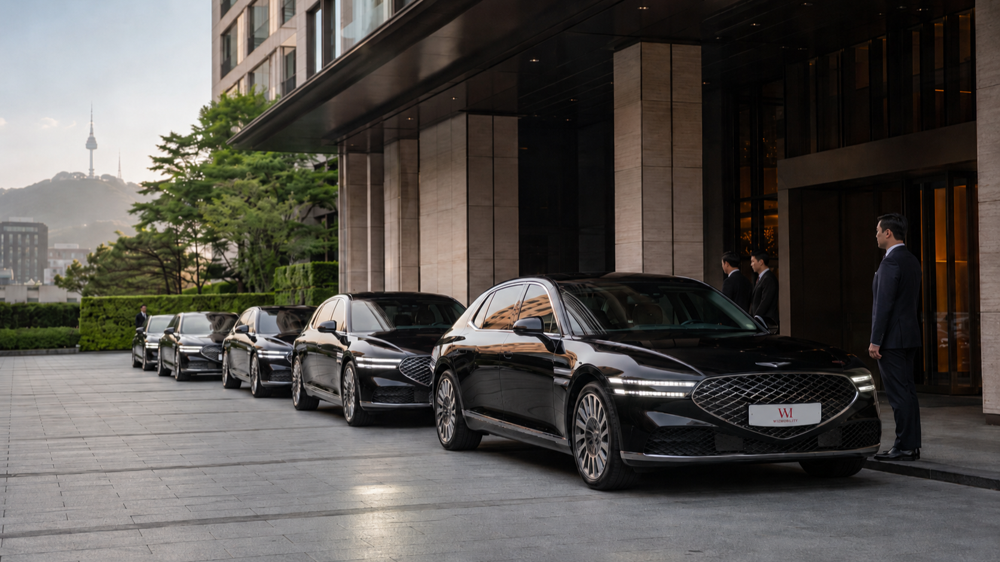

의전 운송의 본질은 예약이 아니라 설계입니다
한국에서 의전 운송을 준비하는 글로벌 브랜드와 행사 기획자 대부분은 이 문제를 조달 과제로 접근합니다. 신뢰할 만한 운영사를 찾고, 차량 가용 여부를 확인하고, 예약을 넣습니다. 하지만 이 접근법은 한국에서 의전 운송이 실제로 무엇을 요구하는지를 놓칩니다. 운영이 매끄럽게 흘렀는지, 아니면 눈에 띄는 실패로 끝났는지를 가르는 것은 거의 언제나 차량이 아닙니다. 운영 이전에 이루어지는 설계가 그 차이를 만듭니다.
일반적인 접근법, 그리고 왜 한계가 드러나는가
한국 내 의전 운송에서 흔히 쓰이는 조달 방식은 익숙한 흐름을 따릅니다. 브랜드나 행사팀이 한두 곳의 운영사에 요청서를 보내고, 차종 사양과 일일 요금을 비교한 뒤, 차량 품질과 가격을 기준으로 선택합니다. 제네시스 G90이나 메르세데스-벤츠 S클래스가 확정되고, 준비는 마무리된 것으로 간주됩니다.
이 방식은 운영 복잡도가 낮은 경우(소규모 일행의 공항 픽업, 저녁 식사 일회성 이동, 두 고정 장소 간 셔틀)에는 충분히 작동합니다. 그러나 복수의 이동이 동시에 발생하거나, 서로 다른 의전 기준을 가진 VIP 게스트가 포함되거나, 일정이 촘촘하게 압축되거나, 호텔 컨시어지나 보안팀과의 사전 조율이 필요한 장소가 있을 때—이 조달 모델은 예측 가능한 방식으로 한계를 드러냅니다.
조달 모델이 결국 답하지 못하는 것은, 운영의 질을 실제로 결정하는 질문입니다. 어떤 게스트가 차량에 탑승하기 전에, 그 운영은 어떻게 설계되어 있었는가. 이것은 "어떤 차량이 있느냐"와는 전혀 다른 질문이며, 전혀 다른 종류의 답을 필요로 합니다.
운영 설계가 실제로 의미하는 것
의전 운송에서 운영 설계란, 운영이 시작되기 전에 완료되는 일련의 결정들입니다. 여기에는 경로 답사가 포함됩니다. 단순히 지도를 보는 것이 아니라, 여러 시간대에 걸쳐 경로를 직접 주행하며 교통 패턴을 파악하고, 정체·행사 통제·예고 없는 우회 상황에 대비한 대안 경로를 확보하는 과정입니다. 기사 배정도 포함됩니다. 행사 당일 아침 가용 기사를 순번대로 배치하는 것이 아니라, 언어 능력·성향·특정 게스트 요구사항에 대한 숙지도를 기준으로 매칭하는 방식입니다. 중앙 배차 체계도 포함됩니다. 모든 동시 이동에 걸쳐 차량 상태·경로 진행 상황·도착 예정 시간을 실시간으로 추적하고, 총괄 담당자가 단일 인터페이스에서 전체 현황을 파악할 수 있도록 하는 조율 체계입니다.
여기에 더해, 행사 전 준비라고 할 수 있는 단계도 있습니다. 전날 저녁부터 각 차량의 실내 환경이 준비됩니다. 브랜드 지정 물품이 자리를 잡고, 실내 온도가 설정되고, 브리핑 자료가 확인됩니다. 첫 번째 차량이 출발하는 시점에는, 사전에 결정할 수 있는 모든 것이 이미 결정된 상태입니다. 기사는 현장에서 즉흥적으로 판단하지 않아도 됩니다. 배차 담당자는 상황에 쫓기며 반응하지 않습니다. 운영은 이미 설계 위에서 움직이고 있습니다.
조달 모델이 이것을 평가하지 못하는 이유는, 일일 요금표나 차종 사양서에 이 내용이 담기지 않기 때문입니다. 운영사가 실제로 어떻게 일하는지를 이해하고, 그것을 드러내는 질문을 직접 던져봐야만 파악할 수 있습니다.
차이가 드러나는 순간
복잡도가 낮은 운영에서는 예약과 운영 설계의 차이가 보이지 않습니다. 두 접근법 모두 같은 결과를 냅니다. 게스트가 목적지에 도착합니다. 차이는 규모가 커지거나, 압박이 가해지거나, 예상치 못한 상황이 발생할 때 나타납니다.
서울에서 진행되는 다국적 브랜드 행사를 예로 들어보면, 하루 80에서 120건의 차량 이동, 한남동 호스피탈리티 장소와 청담 행사장에 분산된 게스트, 각자 다른 이동 일정을 가진 임원진과 지역 팀이 뒤섞인 환경이 만들어집니다. 이 상황에서 차량 예약은 차량을 모아둘 뿐입니다. 운영 설계는 그 차량들이 한 몸처럼 움직이게 만듭니다. 각 차량은 특정 게스트 순서에 배정되고, 각 기사는 하루 전체 일정을 브리핑받으며, 각 경로는 실시간 상황에 맞춰 확인됩니다. 중앙 배차 담당자는 운영 전반에 걸쳐 모든 호텔 컨시어지팀과 연결되어 있습니다.
게스트는 그 설계를 보지 못합니다. 그들이 경험하는 것은 결과입니다. 차량은 그 자리에 있고, 기사는 이름을 알고 있으며, 경로는 자연스럽고, 이동은 힘들이지 않은 것처럼 느껴집니다. 잘 된 설계는 겉으로 드러나지 않습니다. 그것이 바로 목표입니다.
지금 이 시점에 중요한 이유
한국이 글로벌 행사 캘린더에서 차지하는 위치는 지난 5년 사이 크게 달라졌습니다. 럭셔리 패션 메종, 자동차 브랜드 런칭, 글로벌 MICE 행사 등 인바운드 브랜드 운영의 규모가 커졌고, 그에 따라 클라이언트의 운영 기대 수준도 높아졌습니다. 한국관광공사 통계에 따르면 주요 시장의 인바운드 방문객 수는 꾸준히 회복·확장되고 있으며, 서울·부산·제주는 국제 행사 기획자와 브랜드팀의 관심을 점점 더 많이 받고 있습니다.
이 성장이 만들어낸 것은 최상위 운영 기준을 충족할 수 있는 운영사와 그렇지 못한 운영사 사이의 선명한 구분입니다. 그 구분은 차량에 관한 것이 아닙니다. 서울의 주요 운영사들 사이에서 제네시스 G90과 메르세데스-벤츠 S클래스의 가용성은 더 이상 차별화 요소가 아닙니다. 구분은 운영 설계 역량에 있습니다. 짧은 타임라인 안에서, 가시적 실패를 감당할 수 없는 클라이언트를 위해, 규모 있고 정교하게 짜인 운영을 만들어낼 수 있는 능력입니다.
한국에서 모빌리티 파트너를 선정하는 글로벌 브랜드와 MICE 기획자에게 이 흐름이 주는 함의는 단순합니다. 평가 기준이 달라져야 합니다. "운영사가 적합한 차량을 보유하고 있는가"가 아니라, "운영사가 적합한 방법론을 갖추고 있는가"를 물어야 합니다. 경로 답사 프로세스, 기사 배정 방식, 배차 체계, 행사 전 준비 체계—이것들이 운영이 게스트의 경험 속으로 자연스럽게 녹아드는지, 아니면 그 경험을 방해하는지를 결정합니다.
차량 품질에서 운영 설계로 기준이 이동하는 것, 그것이 지금 한국에서 가장 높은 수준의 수송 준비가 이루어지는 방식입니다.
